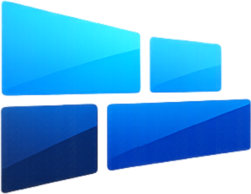

<meta charset="UTF-8">
<title>DS View — player de sinalização digital para TV, offline-first e open source</title>
<meta name="description" content="DS View é um player kiosk open source para TV/totem: cache local, hot-reload e um contrato de API aberto para qualquer backend implementar.">
<meta name="viewport" content="width=device-width, initial-scale=1">
<style>
  :root {
    --bg: #0b0f1a;
    --bg-soft: #111726;
    --panel: #151d30;
    --panel-border: #24304a;
    --ink: #eef1f8;
    --ink-soft: #a7b1c8;
    --ink-faint: #6b7690;
    --brand-a: #33c7ff;
    --brand-b: #2f6bff;
    --brand-c: #0e2fa8;
    /* Texto (links, rótulos, nomes de campo) precisa de mais contraste que preenchimento/gradiente
       decorativo — por isso um token à parte em vez de reaproveitar --brand-a direto como cor de texto. */
    --brand-text: var(--brand-a);
    --method-get-text: #7fb2ff;
    --method-post-text: #33c7ff;
    --grad-a: var(--brand-a);
    --grad-b: var(--brand-b);
    --code-bg: #0c111e;
    --code-key: #7fd7ff;
    --code-str: #9be79e;
    --code-num: #ffcb6b;
    --code-lit: #ff8fa3;
    --code-punc: #6b7690;
    --shadow: 0 20px 60px rgba(6, 10, 20, .45);
    --radius: 16px;
  }
  :root[data-theme="light"] {
    --bg: #f5f7fb;
    --bg-soft: #eef1f8;
    --panel: #ffffff;
    --panel-border: #e1e6f0;
    --ink: #131a2b;
    --ink-soft: #4c5670;
    /* --ink-faint e --brand-text mais escuros que o par do modo escuro de propósito: os valores
       "claros" (#8590a8 / --brand-a #33c7ff) ficam por volta de 2–3:1 de contraste sobre branco,
       abaixo do mínimo de 4.5:1 pra texto — legível no fundo escuro, ilegível no claro. */
    --ink-faint: #4b5568;
    --brand-text: #1454c9;
    --method-get-text: #1454c9;
    --method-post-text: #0b6e8f;
    --grad-a: #1454c9;
    --grad-b: var(--brand-c);
    --code-bg: #0c111e;
    --shadow: 0 16px 40px rgba(20, 30, 60, .12);
  }
  @media (prefers-color-scheme: light) {
    :root:not([data-theme="dark"]) {
      --bg: #f5f7fb;
      --bg-soft: #eef1f8;
      --panel: #ffffff;
      --panel-border: #e1e6f0;
      --ink: #131a2b;
      --ink-soft: #4c5670;
      --ink-faint: #4b5568;
      --brand-text: #1454c9;
      --method-get-text: #1454c9;
      --method-post-text: #0b6e8f;
      --grad-a: #1454c9;
      --grad-b: var(--brand-c);
      --code-bg: #0c111e;
      --shadow: 0 16px 40px rgba(20, 30, 60, .12);
    }
  }
  * { box-sizing: border-box; }
  body {
    margin: 0;
    background: var(--bg);
    color: var(--ink);
    font: 16px/1.6 -apple-system, BlinkMacSystemFont, "Segoe UI", Inter, Roboto, sans-serif;
    -webkit-font-smoothing: antialiased;
  }
  a { color: inherit; }
  .wrap { max-width: 1080px; margin: 0 auto; padding: 0 24px; }
  code, pre { font-family: ui-monospace, SFMono-Regular, "SF Mono", Menlo, Consolas, monospace; }

  /* ---------- header ---------- */
  header.site {
    position: sticky; top: 0; z-index: 20;
    backdrop-filter: blur(10px);
    background: color-mix(in srgb, var(--bg) 82%, transparent);
    border-bottom: 1px solid var(--panel-border);
  }
  header.site .bar {
    display: flex; align-items: center; justify-content: space-between;
    padding: 14px 24px;
  }
  .brand { display: flex; align-items: center; gap: 10px; font-weight: 700; font-size: 17px; letter-spacing: -.01em; }
  .brand img { height: 26px; width: auto; display: block; }
  nav.top { display: flex; gap: 22px; font-size: 14px; color: var(--ink-soft); }
  nav.top a:hover { color: var(--ink); }

  /* ---------- hero ---------- */
  .hero { padding: 76px 0 56px; text-align: center; position: relative; overflow: hidden; }
  .hero::before {
    content: ""; position: absolute; inset: -20% -10% auto -10%; height: 480px;
    background: radial-gradient(60% 60% at 50% 20%, color-mix(in srgb, var(--brand-b) 28%, transparent), transparent 70%);
    pointer-events: none; z-index: -1;
  }
  .eyebrow {
    display: inline-flex; align-items: center; gap: 8px;
    font-size: 12.5px; font-weight: 600; letter-spacing: .04em; text-transform: uppercase;
    color: var(--brand-text); background: color-mix(in srgb, var(--brand-b) 14%, transparent);
    border: 1px solid color-mix(in srgb, var(--brand-b) 35%, transparent);
    padding: 6px 14px; border-radius: 999px; margin-bottom: 22px;
  }
  .hero img.mark { width: 150px; height: auto; margin: 0 auto 20px; display: block; filter: drop-shadow(0 12px 30px rgba(40,110,255,.35)); }
  h1.hero-title {
    font-size: clamp(32px, 5vw, 52px); line-height: 1.08; letter-spacing: -.02em;
    margin: 0 0 18px; font-weight: 800;
  }
  h1.hero-title .grad {
    background: linear-gradient(95deg, var(--grad-a), var(--grad-b));
    -webkit-background-clip: text; background-clip: text; color: transparent;
  }
  .hero p.lead { max-width: 620px; margin: 0 auto 34px; color: var(--ink-soft); font-size: 18px; }
  .cta-row { display: flex; gap: 12px; justify-content: center; flex-wrap: wrap; }
  .btn {
    display: inline-flex; align-items: center; gap: 8px;
    padding: 12px 22px; border-radius: 12px; font-weight: 600; font-size: 14.5px;
    text-decoration: none; border: 1px solid transparent; cursor: pointer;
    transition: transform .15s ease, box-shadow .15s ease;
  }
  .btn:hover { transform: translateY(-1px); }
  .btn-primary { background: linear-gradient(95deg, var(--brand-a), var(--brand-b)); color: #061225; box-shadow: 0 10px 24px rgba(47,107,255,.35); }
  .btn-ghost { background: var(--panel); color: var(--ink); border-color: var(--panel-border); }
  .btn-sm { padding: 9px 16px; font-size: 13.5px; border-radius: 10px; }

  /* ---------- sections ---------- */
  section { padding: 64px 0; }
  section.alt { background: var(--bg-soft); border-top: 1px solid var(--panel-border); border-bottom: 1px solid var(--panel-border); }
  .section-head { max-width: 640px; margin: 0 auto 40px; text-align: center; }
  .section-head .tag { color: var(--brand-text); font-weight: 700; font-size: 13px; letter-spacing: .05em; text-transform: uppercase; }
  .section-head h2 { font-size: clamp(24px, 3.4vw, 32px); margin: 8px 0 10px; letter-spacing: -.01em; }
  .section-head p { color: var(--ink-soft); margin: 0; }

  .grid3 { display: grid; grid-template-columns: repeat(3, 1fr); gap: 18px; }
  .grid2 { display: grid; grid-template-columns: repeat(2, 1fr); gap: 18px; }
  @media (max-width: 780px) { .grid3, .grid2 { grid-template-columns: 1fr; } }

  .card {
    background: var(--panel); border: 1px solid var(--panel-border); border-radius: var(--radius);
    padding: 24px; box-shadow: var(--shadow);
  }
  .card h3 { margin: 10px 0 8px; font-size: 17px; }
  .card p { margin: 0; color: var(--ink-soft); font-size: 14.5px; }
  .ico { font-size: 22px; width: 42px; height: 42px; display: flex; align-items: center; justify-content: center;
    border-radius: 11px; background: color-mix(in srgb, var(--brand-b) 16%, transparent); }

  /* apps */
  .app-card { display: flex; flex-direction: column; gap: 14px; }
  .app-card .plat { font-size: 12.5px; font-weight: 700; text-transform: uppercase; letter-spacing: .04em; color: var(--brand-a); }
  .app-card h3 { margin: 0; font-size: 21px; }
  .app-card ul { margin: 0; padding-left: 18px; color: var(--ink-soft); font-size: 14px; line-height: 1.7; }
  .app-card .actions { display: flex; gap: 10px; margin-top: 6px; flex-wrap: wrap; }
  code.inline {
    background: var(--code-bg); color: #cfe6ff; padding: 2px 7px; border-radius: 6px; font-size: 13px;
  }

  /* arch diagram */
  .diagram {
    display: grid; grid-template-columns: 1fr auto 1fr auto 1fr; align-items: center; gap: 10px;
    background: var(--panel); border: 1px solid var(--panel-border); border-radius: var(--radius);
    padding: 26px 18px; box-shadow: var(--shadow); overflow-x: auto;
  }
  .diagram .node {
    background: var(--bg-soft); border: 1px solid var(--panel-border); border-radius: 12px;
    padding: 14px 16px; text-align: center; min-width: 150px;
  }
  .diagram .node b { display: block; font-size: 14px; margin-bottom: 4px; }
  .diagram .node span { font-size: 12px; color: var(--ink-faint); }
  .diagram .arrow { color: var(--brand-text); font-size: 20px; text-align: center; white-space: nowrap; }
  @media (max-width: 780px) {
    .diagram { grid-template-columns: 1fr; }
    .diagram .arrow { transform: rotate(90deg); }
  }

  /* code blocks */
  pre.code {
    background: var(--code-bg); color: #dbe4f5; border-radius: 12px; padding: 18px 20px;
    overflow-x: auto; font-size: 13.5px; line-height: 1.65; border: 1px solid #1c2438;
  }
  .k { color: var(--code-key); }
  .s { color: var(--code-str); }
  .n { color: var(--code-num); }
  .l { color: var(--code-lit); }
  .p { color: var(--code-punc); }
  .endpoint {
    display: flex; align-items: center; gap: 10px; margin: 30px 0 12px; flex-wrap: wrap;
  }
  .method { font-weight: 800; font-size: 12.5px; padding: 4px 10px; border-radius: 7px; letter-spacing: .03em; }
  .method.get { background: color-mix(in srgb, #2f6bff 22%, transparent); color: var(--brand-text); }
  .method.post { background: color-mix(in srgb, #33c7ff 20%, transparent); color: var(--brand-text); }
  .endpoint code.path { font-size: 15px; }
  .field-table { width: 100%; border-collapse: collapse; margin: 14px 0 6px; font-size: 13.5px; }
  .field-table th, .field-table td { text-align: left; padding: 9px 10px; border-bottom: 1px solid var(--panel-border); vertical-align: top; }
  .field-table th { color: var(--ink-faint); font-weight: 600; font-size: 12px; text-transform: uppercase; letter-spacing: .03em; }
  .field-table td:first-child { white-space: nowrap; font-family: ui-monospace, monospace; color: var(--brand-a); }
  .field-table td:nth-child(2) { white-space: nowrap; color: var(--ink-faint); }
  .status-pill { display: inline-block; font-family: ui-monospace, monospace; font-size: 12.5px; padding: 2px 8px; border-radius: 6px; background: var(--bg-soft); border: 1px solid var(--panel-border); margin: 2px 4px 2px 0; }
  .note {
    border-left: 3px solid var(--brand-b); background: color-mix(in srgb, var(--brand-b) 8%, transparent);
    padding: 12px 16px; border-radius: 0 10px 10px 0; font-size: 14px; color: var(--ink-soft); margin: 18px 0;
  }
  .prose { color: var(--ink-soft); font-size: 15px; }
  .prose h3 { color: var(--ink); font-size: 18px; margin: 28px 0 6px; }

  footer.site { border-top: 1px solid var(--panel-border); padding: 40px 0; color: var(--ink-faint); font-size: 13.5px; }
  footer.site .bar { display: flex; justify-content: space-between; flex-wrap: wrap; gap: 12px; }
  footer.site a { color: var(--ink-soft); text-decoration: none; }
  footer.site a:hover { color: var(--ink); }
</style>

<header class="site">
  <div class="wrap bar">
    <div class="brand"> DS View</div>
    <nav class="top">
      <a href="#apps">Apps</a>
      <a href="#api">Para desenvolvedores</a>
      <a href="https://github.com/dantetesta/dsview-apps">GitHub</a>
      <a href="https://github.com/dantetesta/dsview-apps/releases/latest">Releases</a>
      <a href="#doar">Apoiar ☕</a>
    </nav>
  </div>
</header>

<section class="hero">
  <div class="wrap">
    <span class="eyebrow">Open source · kiosk player · offline-first</span>
    
    <h1 class="hero-title">O player de TV para sinalização digital<br><span class="grad">que continua tocando sem internet</span></h1>
    <p class="lead">DS View transforma qualquer Android, Android TV, TV Box ou PC Windows numa tela de
      sinalização digital: recebe uma playlist, guarda a mídia em disco e mantém a exibição rodando
      mesmo se a rede cair. Código aberto, sem travar você a um backend específico.</p>
    <div class="cta-row">
      <a class="btn btn-primary" href="https://github.com/dantetesta/dsview-apps/releases/latest/download/dsview-android.apk">Baixar para Android</a>
      <a class="btn btn-primary" href="https://github.com/dantetesta/dsview-apps/releases/latest/download/dsview-windows-setup.exe">Baixar para Windows</a>
      <a class="btn btn-ghost" href="#api">Documentação da API →</a>
    </div>
  </div>
</section>

<section class="alt">
  <div class="wrap">
    <div class="section-head">
      <span class="tag">O que resolve</span>
      <h2>Feito para ficar ligado 24 horas, sem babá</h2>
      <p>TV de loja, cardápio de restaurante, painel de recepção: o dispositivo precisa continuar tocando
        mesmo com rede instável, queda de energia ou um TV Box de sobra em algum canto.</p>
    </div>
    <div class="grid3">
      <div class="card">
        <div class="ico">📶</div>
        <h3>Offline-first de verdade</h3>
        <p>Um servidor local em <code class="inline">127.0.0.1</code> espelha a playlist no disco. O player
          nunca fala direto com a internet — se a rede cai, ele segue tocando do cache.</p>
      </div>
      <div class="card">
        <div class="ico">🔄</div>
        <h3>Hot-reload sem cortar</h3>
        <p>Trocou o conteúdo no painel? O app troca a fila na <em>fronteira do próximo item</em>, nunca no
          meio de uma imagem ou vídeo em exibição.</p>
      </div>
      <div class="card">
        <div class="ico">🖥️</div>
        <h3>Kiosk full-screen</h3>
        <p>Sem barra de endereço, sem distração. Auto-start no boot, wake lock contra a tela apagar,
          recuperação automática se o processo travar.</p>
      </div>
    </div>
  </div>
</section>

<section id="apps">
  <div class="wrap">
    <div class="section-head">
      <span class="tag">Dois apps, uma arquitetura</span>
      <h2>Android e Windows</h2>
      <p>Implementações independentes (Kotlin e Electron) que seguem o mesmo desenho: cache-proxy local +
        loop de sincronização. Uma mudança de comportamento é replicada nos dois.</p>
    </div>
    <div class="grid2">
      <div class="card app-card">
        <span class="plat">Android</span>
        <h3>Kotlin + WebView</h3>
        <ul>
          <li>Roda em Android 5.0+, incluindo <strong>Android TV</strong> e TV Box genérico</li>
          <li>Servidor local via NanoHTTPD, sem dependências de runtime pesadas</li>
          <li>Diagnóstico embutido: tela de erro legível, log de JS, crash gravado em disco</li>
        </ul>
        <div class="actions">
          <a class="btn btn-primary btn-sm" href="https://github.com/dantetesta/dsview-apps/releases/latest/download/dsview-android.apk">Baixar APK</a>
          <a class="btn btn-ghost btn-sm" href="android/">Ver código</a>
        </div>
      </div>
      <div class="card app-card">
        <span class="plat">Windows</span>
        <h3>Electron 31</h3>
        <ul>
          <li>Windows 10 e 11, instalador NSIS com wizard</li>
          <li>Zero dependências de runtime além do próprio Electron/Node</li>
          <li>Auto-start no boot, modo só-online opcional (sem cache)</li>
        </ul>
        <div class="actions">
          <a class="btn btn-primary btn-sm" href="https://github.com/dantetesta/dsview-apps/releases/latest/download/dsview-windows-setup.exe">Baixar instalador</a>
          <a class="btn btn-ghost btn-sm" href="windows/">Ver código</a>
        </div>
      </div>
    </div>
  </div>
</section>

<section class="alt" id="api">
  <div class="wrap">
    <div class="section-head">
      <span class="tag">Para desenvolvedores</span>
      <h2>O contrato de API é público</h2>
      <p>O DS View não é preso a nenhum backend. Qualquer sistema que implemente estes dois endpoints
        HTTP vira um servidor de playlists compatível — os apps só precisam de uma origem e um token.</p>
    </div>

    <div class="diagram" style="margin-bottom:48px">
      <div class="node"><b>Seu backend</b><span>expõe os 2 endpoints abaixo</span></div>
      <div class="arrow">→</div>
      <div class="node"><b>Servidor local</b><span>127.0.0.1, cache-proxy do app</span></div>
      <div class="arrow">→</div>
      <div class="node"><b>player.js</b><span>renderiza a fila na tela</span></div>
    </div>

    <div class="endpoint">
      <span class="method get">GET</span>
      <code class="path">/player/{token}</code>
    </div>
    <p class="prose">Estado atual da playlist. É o endpoint de <strong>polling</strong> (o player chama a
      cada ~45–60s, com jitter contra efeito manada) e também o de <strong>heartbeat</strong> — conta o
      player como "no ar" quando o <code class="inline">device</code> enviado é válido.</p>

    <table class="field-table">
      <tr><th>Query</th><th></th><th>Descrição</th></tr>
      <tr><td>t</td><td>opcional</td><td>cache-buster (<code class="inline">Date.now()</code>). Resposta sempre <code class="inline">no-store</code>.</td></tr>
      <tr><td>device</td><td>opcional</td><td><code class="inline">device_token</code> emitido por <code class="inline">/auth</code>. Sem ele, playlist com senha responde <code class="inline">password</code>.</td></tr>
    </table>

    <pre class="code" data-json>{
  "status": "ok",
  "payload": { "...": "ver objeto payload abaixo" }
}</pre>
    <p class="prose">Outros valores possíveis de <code class="inline">status</code>:
      <span class="status-pill">password</span>
      <span class="status-pill">expired</span> (com <code class="inline">title</code>/<code class="inline">message</code>)
      — e <code class="inline">404</code> se o token não existir, no formato padrão de erro REST do WordPress
      (<code class="inline">{"code":"dsf_notfound","message":"...","data":{"status":404}}</code>).</p>

    <div class="endpoint">
      <span class="method post">POST</span>
      <code class="path">/player/{token}/auth</code>
    </div>
    <p class="prose">Valida a senha (se a playlist tiver uma) e emite um <code class="inline">device_token</code>
      de <strong>sessão eterna</strong> — uma vez emitido, o aparelho nunca mais precisa reenviar senha, a
      menos que ela seja trocada ou o link rotacionado (isso revoga todos os tokens emitidos). O player
      chama este endpoint mesmo sem senha, só para receber o <code class="inline">device</code> e contar
      como "no ar".</p>

    <pre class="code" data-json>{ "password": "" }</pre>

    <p class="prose">Resposta com senha correta (ou playlist sem senha):</p>
    <pre class="code" data-json>{
  "status": "ok",
  "device": "a1b2c3d4e5f6...",
  "payload": { "...": "ver objeto payload abaixo" }
}</pre>

    <h3 class="prose" style="margin-top:36px">Objeto <code class="inline">payload</code></h3>
    <pre class="code" data-json>{
  "id": 42,
  "title": "Cardápio — Loja Centro",
  "transition": "fade",
  "orientation": 0,
  "version": "9f8c1a2b3d4e5f60718293a4b5c6d7e8",
  "queue": [
    {
      "kind": "image",
      "src": "https://exemplo.com/uploads/foto1.webp",
      "duration": 8,
      "fit": "cover"
    },
    {
      "kind": "video",
      "provider": "self",
      "src": "https://exemplo.com/uploads/video1.mp4",
      "external_id": null,
      "duration": null,
      "fit": "cover",
      "audio": false
    },
    {
      "kind": "video",
      "provider": "youtube",
      "src": null,
      "external_id": "dQw4w9WgXcQ",
      "duration": 30,
      "fit": "contain",
      "audio": true
    }
  ]
}</pre>

    <table class="field-table">
      <tr><th>Campo</th><th>Tipo</th><th>Descrição</th></tr>
      <tr><td>version</td><td>string</td><td>muda sempre que o conteúdo <strong>efetivo agora</strong> muda (edição ou agendamento ligando/desligando item). O player só troca a fila na fronteira do próximo item — nunca corta o que está tocando. Os apps também usam este campo para saber se precisam baixar mídia nova.</td></tr>
      <tr><td>orientation</td><td>number</td><td><code class="inline">0</code> · <code class="inline">90</code> · <code class="inline">180</code> · <code class="inline">270</code>. Aplicada na hora, mesmo com conteúdo já tocando.</td></tr>
      <tr><td>transition</td><td>string</td><td><code class="inline">fade</code> · <code class="inline">none</code> · <code class="inline">slide</code>. O player de referência hoje ignora este campo (sempre faz fade de 0.7s) — está aqui para consumidores próprios.</td></tr>
      <tr><td>id / title</td><td>number / string</td><td>identificação da playlist. Não renderizados pelo player de referência hoje.</td></tr>
      <tr><td>queue</td><td>array</td><td>a fila <strong>já achatada</strong>: galerias já viraram N imagens, playlists aninhadas já foram expandidas, agendamento já foi avaliado no fuso da playlist.</td></tr>
    </table>

    <table class="field-table">
      <tr><th>Item imagem</th><th>Tipo</th><th>Descrição</th></tr>
      <tr><td>kind</td><td>"image"</td><td>—</td></tr>
      <tr><td>src</td><td>string</td><td>URL da imagem</td></tr>
      <tr><td>duration</td><td>number</td><td>segundos em tela (mínimo 1)</td></tr>
      <tr><td>fit</td><td>"cover" | "contain"</td><td><code class="inline">cover</code> corta para preencher; <code class="inline">contain</code> mostra inteira</td></tr>
    </table>

    <table class="field-table">
      <tr><th>Item vídeo</th><th>Tipo</th><th>Descrição</th></tr>
      <tr><td>kind</td><td>"video"</td><td>—</td></tr>
      <tr><td>provider</td><td>"self" | "youtube" | "vimeo"</td><td>origem do vídeo</td></tr>
      <tr><td>src</td><td>string | null</td><td>URL do arquivo, só quando <code class="inline">provider="self"</code></td></tr>
      <tr><td>external_id</td><td>string | null</td><td>ID no YouTube/Vimeo; <code class="inline">null</code> quando <code class="inline">self</code></td></tr>
      <tr><td>duration</td><td>number | null</td><td><code class="inline">null</code> = tocar até o fim real do arquivo/embed</td></tr>
      <tr><td>fit</td><td>"cover" | "contain"</td><td>mesma semântica da imagem</td></tr>
      <tr><td>audio</td><td>boolean</td><td>som liberado só após gesto do usuário/app (regra do navegador)</td></tr>
    </table>

    <div class="note">
      <strong>Implementando o seu backend?</strong> Responda sempre <code class="inline">no-store</code> nos
      dois endpoints (o player faz polling constante — qualquer cache intermediário trava a TV num estado
      velho), garanta que <code class="inline">version</code> muda em toda alteração de conteúdo efetivo, e
      trate <code class="inline">device_token</code> como eterno até uma revogação explícita.
    </div>

    <p class="prose">Os apps não falam com o seu backend diretamente na hora de tocar: cada um sobe um
      servidor local que imita esses dois endpoints, baixa a mídia para o disco e reescreve
      <code class="inline">queue[].src</code> para arquivos locais. Ver
      <code class="inline">windows/src/main/{server,sync,config,resolve}.js</code> e o equivalente Kotlin em
      <code class="inline">android/.../{LocalServer,Syncer,Config,Resolver}.kt</code>.</p>
  </div>
</section>

<section>
  <div class="wrap" style="text-align:center">
    <div class="section-head" style="margin-bottom:24px">
      <span class="tag">Implementação de referência</span>
      <h2>Feito e testado com o DS Fácil</h2>
      <p>A implementação de referência deste contrato é o <a href="https://dsfacil.com.br" style="color:var(--brand-text)">DS Fácil</a>
        (plugin WordPress, código fechado) — citado aqui só como exemplo de backend compatível, não como
        dependência. Qualquer sistema que implemente os dois endpoints acima funciona igual.</p>
    </div>
    <a class="btn btn-ghost" href="https://github.com/dantetesta/dsview-apps">Ver o código no GitHub →</a>
  </div>
</section>

<section class="alt" id="doar">
  <div class="wrap" style="text-align:center">
    <div class="section-head" style="margin-bottom:20px">
      <span class="tag">Código aberto, licença MIT</span>
      <h2>Gostou do DS View?</h2>
      <p>Use, modifique e redistribua à vontade — é livre de verdade, sem pegadinha. Se quiser retribuir,
        um apoio é bem-vindo (e totalmente opcional).</p>
    </div>
    <div class="grid2" style="max-width:480px;margin:0 auto">
      <div class="card">
        <div class="ico">🔑</div>
        <h3>Pix</h3>
        <p><code class="inline">dante.testa@gmail.com</code></p>
      </div>
      <div class="card">
        <div class="ico">💳</div>
        <h3>PayPal</h3>
        <p><code class="inline">dante.testa@gmail.com</code></p>
      </div>
    </div>
  </div>
</section>

<footer class="site">
  <div class="wrap bar">
    <div>DS View — player de sinalização digital open source, licença <a href="LICENSE">MIT</a>.</div>
    <div>
      <a href="https://github.com/dantetesta/dsview-apps">GitHub</a> ·
      <a href="https://github.com/dantetesta/dsview-apps/releases/latest">Releases</a> ·
      <a href="README.md">README</a> ·
      <a href="#doar">Apoiar ☕</a>
    </div>
  </div>
</footer>

<script>
  // ponytail: highlighter mínimo pra JSON estático nos blocos <pre data-json> — sem lib externa.
  (function () {
    function highlight(json) {
      return json
        .replace(/&/g, '&amp;').replace(/</g, '&lt;').replace(/>/g, '&gt;')
        .replace(/("(\\u[a-zA-Z0-9]{4}|\\[^u]|[^\\"])*"(\s*:)?|\b(true|false|null)\b|-?\d+(\.\d+)?([eE][+-]?\d+)?)/g,
          function (match) {
            var cls = 'n';
            if (/^"/.test(match)) cls = /:$/.test(match) ? 'k' : 's';
            else if (/true|false|null/.test(match)) cls = 'l';
            return '<span class="' + cls + '">' + match + '</span>';
          });
    }
    document.querySelectorAll('pre.code[data-json]').forEach(function (pre) {
      pre.innerHTML = highlight(pre.textContent);
    });
  })();
</script>
